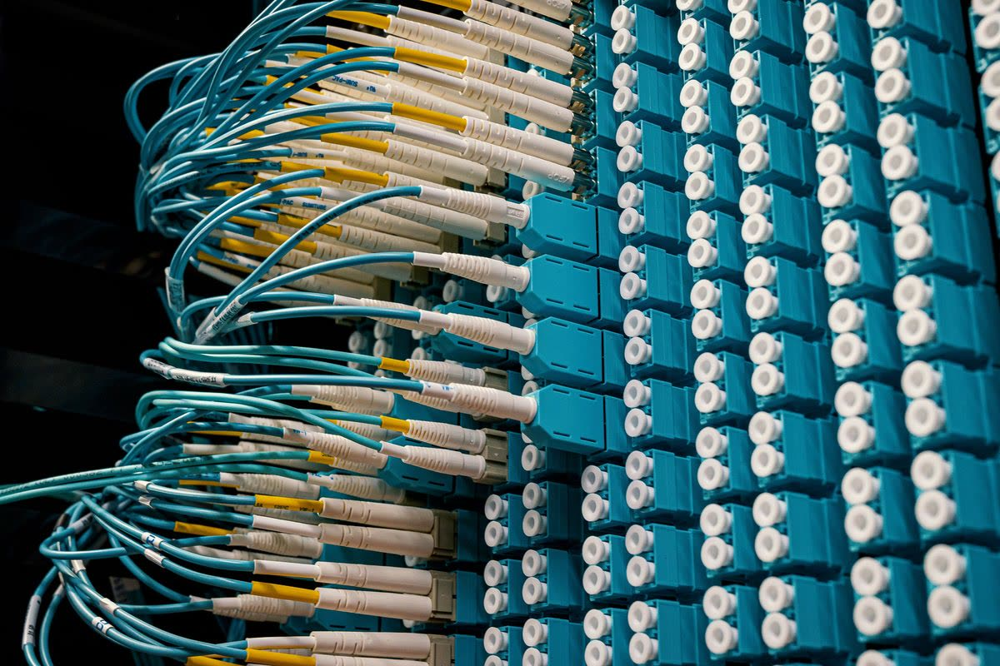
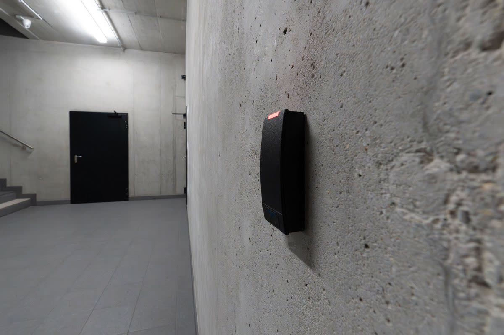
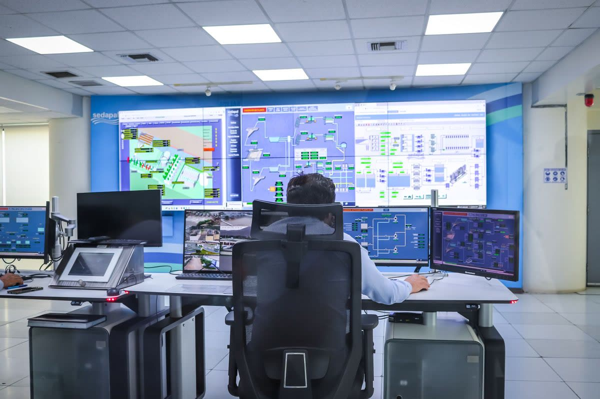
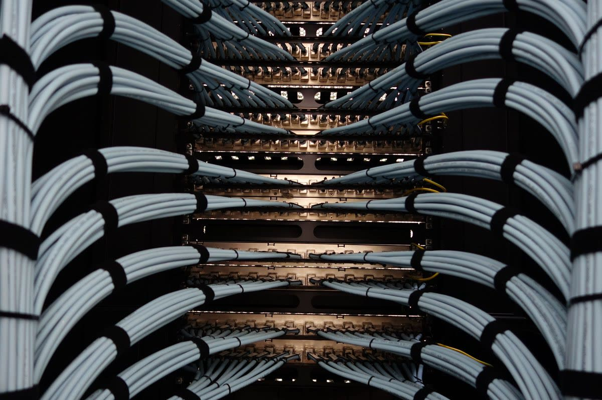

One rack sweep.
Six useful answers.
A phone sweep captures the rack. RackTrack turns it into a clear record. Each team uses that record to answer the question they care about.
Explore the team views ↓
LIVE INFRASTRUCTUREONE SHARED RECORD
The people who own the rack.
Each role lives with a specific failure mode of the current stack. Each one gets a specific intelligence surface.
47 / 56 cabinets swept
Infrastructure & Data Center Leaders
One source of truth across every site, every row, every rack, continuously reconciled.
Read the case →

24 + 4 ports mapped per switch
Network Architects & Engineers
Port-level topology that matches the cables you can actually touch.
Read the case →

2 devices with no agent coverage
Security & Vulnerability Teams
A complete inventory of every physical device, including the ones agents can't reach.
Read the case →
09:14 sweep timestamp on every record
Compliance & Audit Owners
Audit-ready evidence generated continuously, mapped to SOC 2, ISO 27001, HIPAA, and PCI-DSS.
Read the case →

B-06 / U35 located to rack unit
Incident Responders & On-Call
Find the device, and the port, before you open the door.
Read the case →

4 CMDB deltas on one cabinet
M&A & Migration Teams
Walk the rows with a phone. Days later you have inventory, topology, and posture.
Read the case →
Bring the pressure you own.
We’ll start at the rack.